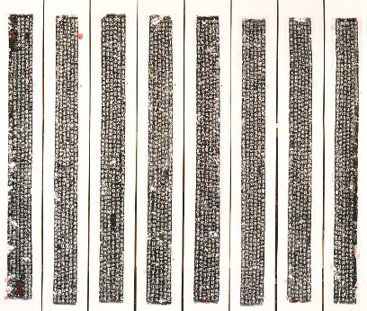
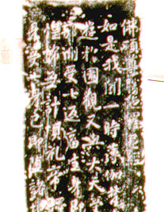

義助慰安婦 —— 李敖百件珍藏義賣藝術品（第47件） 品 名： D1. 經幢八屏 預估價： 80 萬 成交價： （保留） 說 明： 為中國佛教重要文物，此「經幢」刻於唐宣宗大中四年（851 年）。唐朝為佛教黃金時代，且人人擅長書法，重要寺廟前往往立碑（八面）上刻佛經，以為鎮鬼驅邪之用，稱為「經幢」；「鬼影幢幢」即與此相映成巧，惟原本作名詞用的「幢」字變成了形容詞。清光緒卅年五月廿日，滿洲大員、著名收藏家端方（辛亥革命時被殺）在最後一條上加註了幾個字。  細部放大： 
為中國佛教重要文物，此「經幢」刻於唐宣宗大中四年（851 年）。唐朝為佛教黃金時代，且人人擅長書法，重要寺廟前往往立碑（八面）上刻佛經，以為鎮鬼驅邪之用，稱為「經幢」；「鬼影幢幢」即與此相映成巧，惟原本作名詞用的「幢」字變成了形容詞。清光緒卅年五月廿日，滿洲大員、著名收藏家端方（辛亥革命時被殺）在最後一條上加註了幾個字。
細部放大：